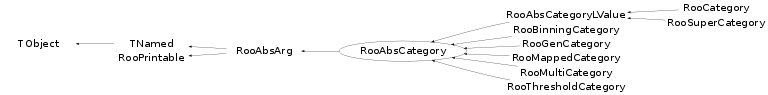

class RooAbsCategory: public RooAbsArg
RooAbsCategory is the common abstract base class for objects that represent a discrete value with a finite number of states. Each state consist of a label/index pair, which is stored in a RooCatType object. Implementation of RooAbsCategory may be derived, there no interface is provided to modify the contents, nor a public interface to define states.
Function Members (Methods)
This is an abstract class, constructors will not be documented.
Look at the header to check for available constructors.
public:
protected:
Data Members
public:
| enum RooAbsArg::ConstOpCode { | Activate | |
| DeActivate | ||
| ConfigChange | ||
| ValueChange | ||
| }; | ||
| enum RooAbsArg::OperMode { | Auto | |
| AClean | ||
| ADirty | ||
| }; | ||
| enum TObject::EStatusBits { | kCanDelete | |
| kMustCleanup | ||
| kObjInCanvas | ||
| kIsReferenced | ||
| kHasUUID | ||
| kCannotPick | ||
| kNoContextMenu | ||
| kInvalidObject | ||
| }; | ||
| enum TObject::[unnamed] { | kIsOnHeap | |
| kNotDeleted | ||
| kZombie | ||
| kBitMask | ||
| kSingleKey | ||
| kOverwrite | ||
| kWriteDelete | ||
| }; | ||
| enum RooPrintable::ContentsOption { | kName | |
| kClassName | ||
| kValue | ||
| kArgs | ||
| kExtras | ||
| kAddress | ||
| kTitle | ||
| kCollectionHeader | ||
| }; | ||
| enum RooPrintable::StyleOption { | kInline | |
| kSingleLine | ||
| kStandard | ||
| kVerbose | ||
| kTreeStructure | ||
| }; |
protected:
| set<std::string> | RooAbsArg::_boolAttrib | Boolean attributes |
| set<std::string> | RooAbsArg::_boolAttribTransient | ! Transient boolean attributes (not copied in ctor) |
| UChar_t | _byteValue | ! Transient cache for byte values from tree branches |
| deque<RooAbsCache*> | RooAbsArg::_cacheList | list of caches |
| RooRefCountList | RooAbsArg::_clientList | list of client objects |
| RooRefCountList | RooAbsArg::_clientListShape | subset of clients that requested shape dirty flag propagation |
| RooRefCountList | RooAbsArg::_clientListValue | subset of clients that requested value dirty flag propagation |
| TIterator* | RooAbsArg::_clientShapeIter | ! Iterator over _clientListShape |
| TIterator* | RooAbsArg::_clientValueIter | ! Iterator over _clientListValue |
| Bool_t | RooAbsArg::_deleteWatch | ! Delete watch flag |
| RooExpensiveObjectCache* | RooAbsArg::_eocache | Pointer to global cache manager for any expensive components created by this object |
| Bool_t | RooAbsArg::_fast | Allow fast access mode in getVal() and proxies |
| static Bool_t | RooAbsArg::_inhibitDirty | Static flag controlling global inhibit of dirty state propagation |
| static Int_t | RooPrintable::_nameLength | |
| TNamed* | RooAbsArg::_namePtr | ! Do not persist. Pointer to global instance of string that matches object named |
| RooAbsArg::OperMode | RooAbsArg::_operMode | Dirty state propagation mode |
| RooArgSet* | RooAbsArg::_ownedComponents | ! Set of owned component |
| Bool_t | RooAbsArg::_prohibitServerRedirect | ! Prohibit server redirects -- Debugging tool |
| TRefArray | RooAbsArg::_proxyList | list of proxies |
| RooRefCountList | RooAbsArg::_serverList | list of server objects |
| Bool_t | RooAbsArg::_shapeDirty | Flag set if value needs recalculating because input shapes modified |
| map<std::string,std::string> | RooAbsArg::_stringAttrib | String attributes |
| Bool_t | _treeVar | ! do not persist |
| TIterator* | _typeIter | ! |
| TObjArray | _types | Array of allowed values |
| RooCatType | _value | Current value |
| Bool_t | RooAbsArg::_valueDirty | Flag set if value needs recalculating because input values modified |
| static Bool_t | RooAbsArg::_verboseDirty | Static flag controlling verbose messaging for dirty state changes |
| TString | TNamed::fName | object identifier |
| TString | TNamed::fTitle | object title |
Class Charts
{kind=link}
{kind=link}
{kind=link}
{kind=link}

Function documentation
Bool_t operator==(Int_t index) const
Equality operator with a integer (compares with state index number)
Bool_t operator==(const char* label) const
Equality operator with a string (compares with state label string)
Bool_t operator==(const RooAbsArg& other)
Equality operator with another RooAbsArg. Only functional is also a RooAbsCategory, will return true if index is the same
const RooCatType* defineType(const char* label)
Define a new state with given name. The lowest available integer number is assigned as index value
const RooCatType* defineTypeUnchecked(const char* label, Int_t index)
Internal version of defineType that does not check if type already exists
const RooCatType* defineType(const char* label, Int_t index)
Define new state with given name and index number.
const RooCatType* lookupType(const RooCatType& type, Bool_t printError = kFALSE) const
Find our type that matches the specified type, or return 0 for no match.
const RooCatType* lookupType(Int_t index, Bool_t printError = kFALSE) const
Find our type corresponding to the specified index, or return 0 for no match.
const RooCatType* lookupType(const char* label, Bool_t printError = kFALSE) const
Find our type corresponding to the specified label, or return 0 for no match.
Bool_t readFromStream(istream& is, Bool_t compact, Bool_t verbose = kFALSE)
Read object contents from stream (dummy for now)
void printMultiline(ostream& os, Int_t contents, Bool_t verbose = kFALSE, TString indent = "") const
Print info about this object to the specified stream. In addition to the info from RooAbsArg::printStream() we add: Shape : label, index, defined types
void attachToVStore(RooVectorDataStore& vstore)
Attach the category index and label to as branches to the given vector store
void attachToTree(TTree& t, Int_t bufSize = 32000)
const RooCatType* getOrdinal(UInt_t n, const char* rangeName = 0) const
Return state definition of ordinal nth defined state, needed by the generator mechanism.
RooAbsArg * createFundamental(const char* newname = 0) const
Create a RooCategory fundamental object with our properties.
Bool_t isSignType(Bool_t mustHaveZero = kFALSE) const
Determine if category has 2 or 3 states with index values -1,0,1
Int_t numTypes(const char* = 0) const
Return number of types defined (in range named rangeName if rangeName!=0)
Bool_t isIntegrationSafeLValue(const RooArgSet* ) const
Is this l-value object safe for use as integration observable
RooCatType evaluate() const